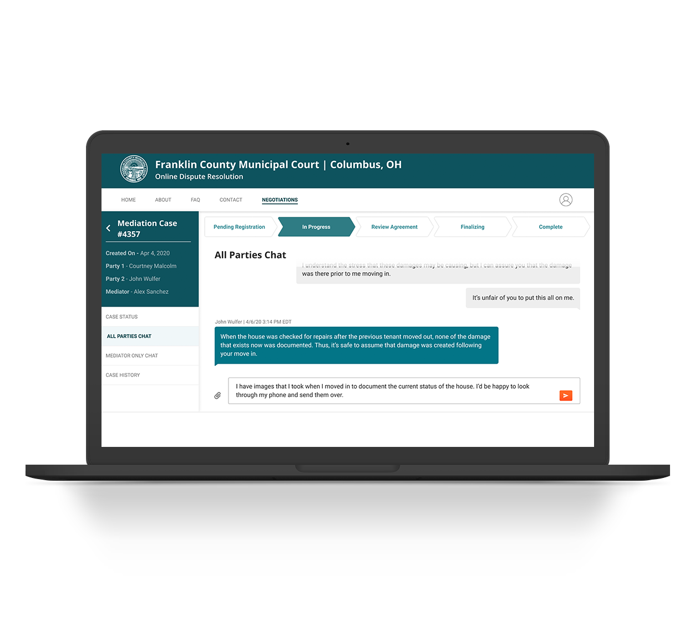

Overview
Matterhorn's Online Dispute Resolution (ODR) platform was intended to facilitate dispute resolution between two parties without having to go to court. Matterhorn observed low signup conversion rates among American Sign Language users (ASL). The platform was found to be complex and inaccessible which increased the risk of losing incoming ASL users.
Role
UX researcher
Interaction designer
Visual designer
Prototype
Tech stack
Figma
Adobe XD
Miro
Platforms
Desktop
Year
2020
Problems
After conducting several interviews and surveys with members of the ASL community
and performing
heuristic evaluations of the platform, our team identified four primary issues with the current
website.
Vague
The platform doesn't provide users with clear feedback regarding what
steps to take throughout the mediation process.
Inflexible
Matterhorn’s platform didn’t offer a way to schedule an in-person
mediation session if users didn’t want to continue their dispute online.
Complex
There is a significant number of legal terms and phrases related to
mediation that are hard to understand.
Inaccessible
Interviewees complained that the current process lacks accurate captions,
causing increased difficulty to complete tasks.
Opportunity
How might we make matterhorn's platform clear, flexible, simple, and accessible?
Clear
The new interface should be clear and concise. Disclosing the steps involved in
online mediation before registering and communicating the state of the dispute throughout
the process.
Flexible
The new interface should allow users to leverage the court system by
assisting them in scheduling an in-person dispute resolution meeting with an interpreter
present.
Simple
Legal text on the platform is simplified to better accommodate ASL users
with lower English proficiency.
Accessible
The platform should offer a way to understand its video content without
listening to it. This could be achieved with the addition of accurate video captions and/or
transcriptions.

Iteration 01
Dashboard design
Implemented a progress bar so that users would more strongly understand exactly where they were in the mediation process as well as a “Status” and “History” information in the left sidebar so that the user is not forced to toggle back and forth.
Iteration 02
Made progress bar smaller
We reduced the size of the progress bar and navigation to ensure this the chat box stays above the fold since messages on the platform tend to be long and more formal than other chat platforms.

High Fidelity
Final Design
Implemented a progress bar so that users would more strongly understand exactly where they were in the mediation process as well as a “Status” and “History” information in the left sidebar so that the user is not forced to toggle back and forth.
Prototype
We used figma as our primary tool for creating and testing our desings. Below are
some of the design decisions made after testing the prototype with ASL users.

When requesting a language interpreter, American Sign Language (ASL) should
be the first option to be in compliance with ADA standards.
When users are registering for a case, it should be made clear where their
case number (if they have one) originates from.
Font size should be increased in the Negotiations page as well as in the
chat interface for readability.
Style Guide
Style guide containing a collection of UI elements and guidelines for Matterhorn to incorporate in the their platform.
Final Designs
The final designs were the culmination of a year-long project.


Impact
During our final validation, users completed 96% of the mediation process without
errors, reporting high satisfaction levels with the clarity, flexibility, accessibility, and
simplicity of the site. Users mentioned the progress bar and the disclosure of steps on the Home
Page as key features.
Clear
Users described the mediation process as clear and concise from the moment they
were exposed to the mediation steps on the Home Page.
Flexible
Users agreed that being able to access an in-person interpreter at all times
throughout the process makes them feel in control and reduces the anxiety of needing to find
an interpreter.
Simple
Users had a positive reaction to the quantity and quality of information
presented in the registration and mediation tasks, describing them as intuitive and easy to
follow.
Accessible
Users unanimously described the site as inclusive, reporting high levels of
satisfaction with the iconography, buttons, text, and captions/transcripts.